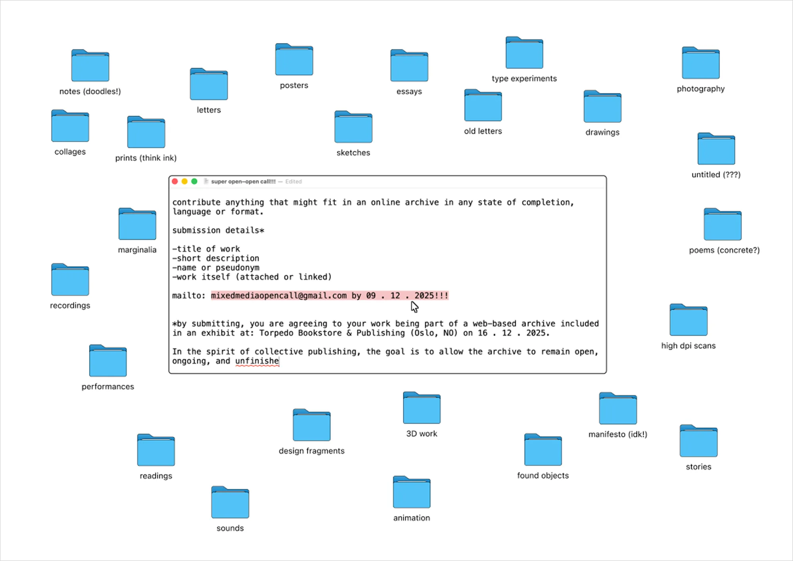
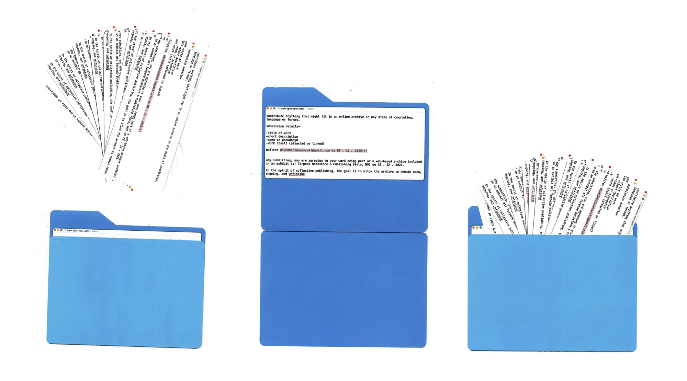
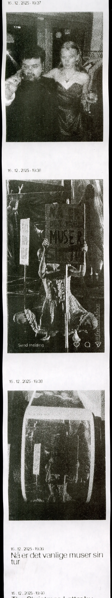
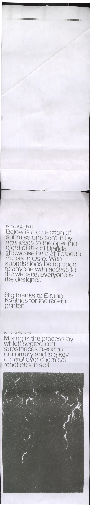

Live Open Call: Installation
Designing and building a QR-to-receipt-printer installation so visitors at an Oslo opening night could add to an open call from the room.

Brief
The brief was to compare a premeditated open call with a live one on the same night. The first had gone out across the UK, Canada and Norway, then been printed on one long receipt and made into a website (art-kive). What was missing was a way for somebody in the room to add to it.
01Structure
The call asked for anything in any format, so the archive needed a field for every kind of thing somebody might send.
I gave every object the same fields: title, medium, dimensions, date and place, edition, creator and contributors, with a choice of which to export.

02Promote
A countdown on the submission site meant the call could be promoted ahead of the night rather than announced on it.
Submissions came in from Canada and Australia while the night was in Oslo, a continuous stream for as long as the site was up.
03Build
Visitors scanned a QR code and their submission went straight from the browser to the printer.
I set up the backend and a simple input screen that opened the phone's camera and took a short text submission.
04Print
A thermal receipt printer replaced a screen, so every submission was linked to the next on one continuous roll.
I designed the receipt output too, including the typeface and the image format.
05Archive
Both receipts were scanned and put back up on the site, so nothing that came in disappeared again.
Everything stayed browsable, drawings and comics included. It's a piece I'd want to run again as another way of getting visitors to co-create.


Results
both open calls
on the night
What I learned
The receipt printer was both a constraint and what unified the project. Once printed, nothing could be edited, so every submission became part of one record.